Affiche : source Wikipedia/en (fair-use)
#1
Parasite (기생충 / Gisaengchung)
Song Kang HoChoi Woo ShikLee Sun Kyun
★ Palme d'or 2019 · 4 Oscars (dont Meilleur film)
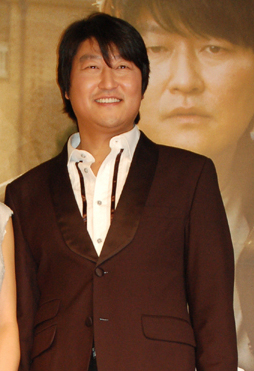
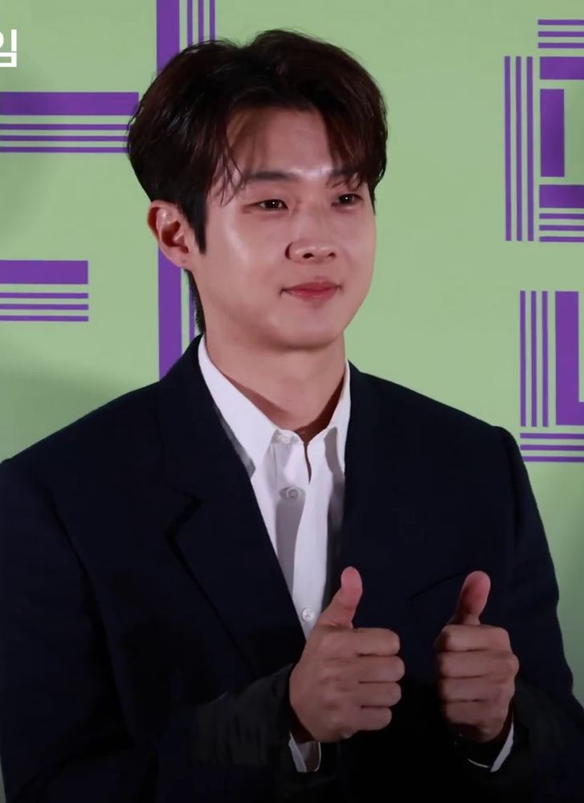
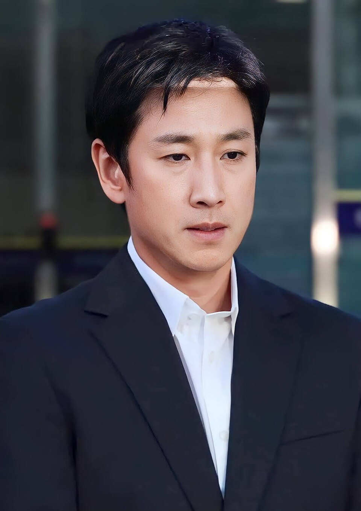
liste_films.csv + films.json). Photos d'acteurs : CC Wikimedia Commons.| # | Film | Année | IMDb | VF | Réalisateur |
|---|---|---|---|---|---|
| 1 | Parasite | 2019 | 8.5 | Confirmée (VF salles + TV) | Bong Joon-ho |
| 2 | Oldboy | 2003 | 8.3 | Support DVD/Blu-ray VF | Park Chan-wook |
| 3 | Memories of Murder | 2003 | 8.1 | Confirmée (VF Vidéo/VOd) | Bong Joon-ho |
| 4 | The Chaser | 2008 | 8.0 | Confirmée (VF salles) | Na Hong-jin |
| 5 | The Man from Nowhere | 2010 | 7.7 | Confirmée (DVD FR doublé FR) | Lee Jeong-beom |
| 6 | I Saw the Devil | 2010 | 7.7 | Confirmée (VF DVD/Blu-ray ARP Sélection + streaming FR) | Kim Jee-woon |
| 7 | Train to Busan | 2016 | 7.6 | Confirmée (VF salles) | Yeon Sang-ho |
| 8 | Okja | 2017 | 7.3 | Confirmée (Netflix VF) | Bong Joon-ho |
| 9 | Snowpiercer | 2013 | 7.1 | Confirmée (Le Transperceneige, VF) | Bong Joon-ho |
| 10 | The Host | 2006 | 7.1 | Confirmée (VF DVD/Blu-ray français + diffusion FR) | Bong Joon-ho |
| 11 | Space Sweepers | 2021 | 6.6 | Confirmée (Netflix VF) | Jo Sung-hee |
| 12 | Peninsula | 2020 | 5.6 | Confirmée (VF salles) | Yeon Sang-ho |



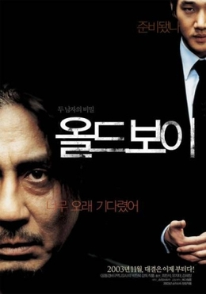
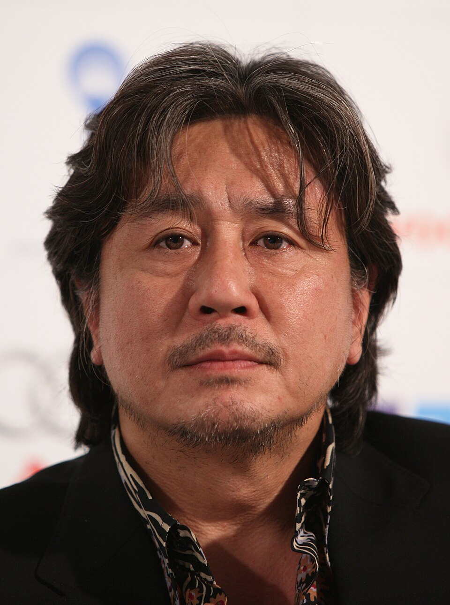
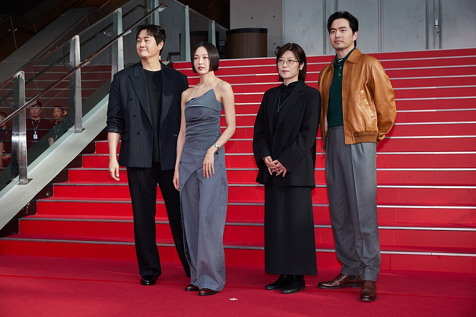
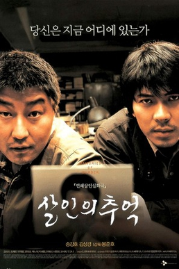
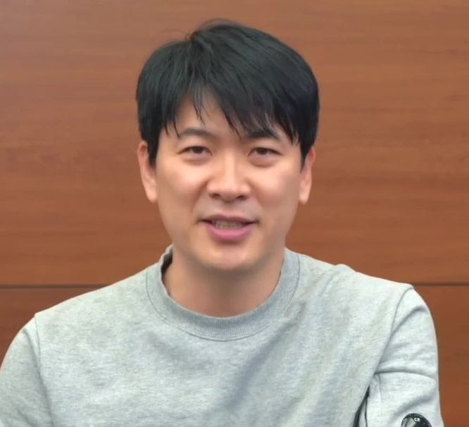

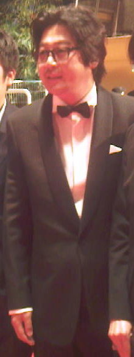
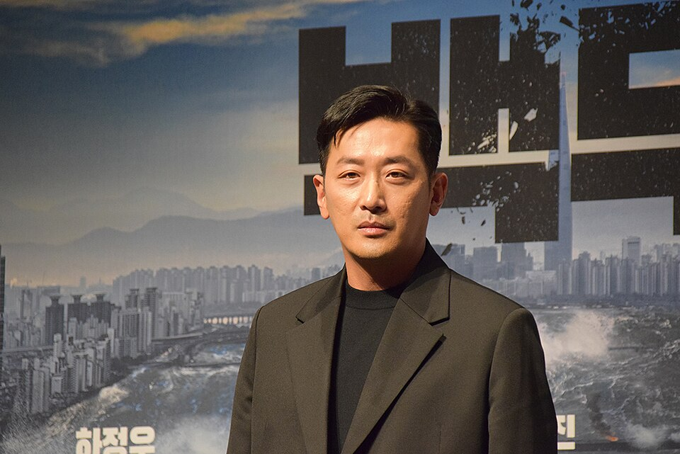

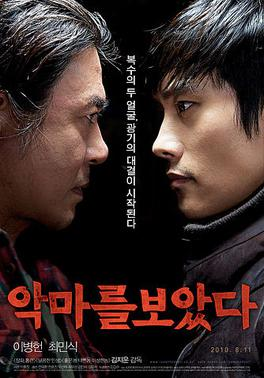
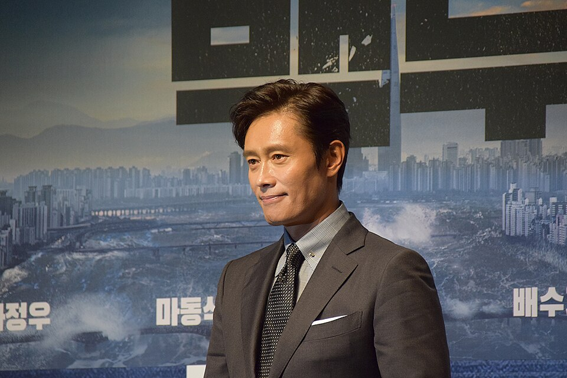
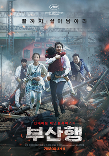
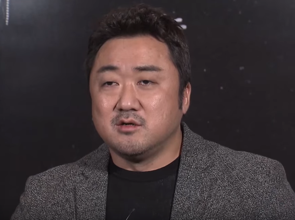
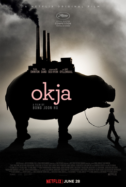
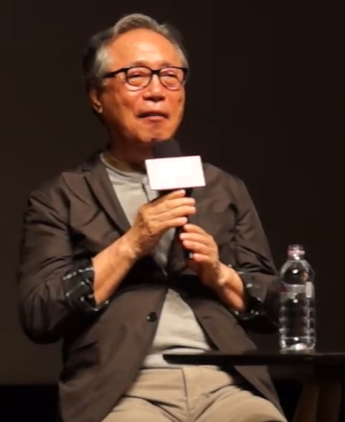
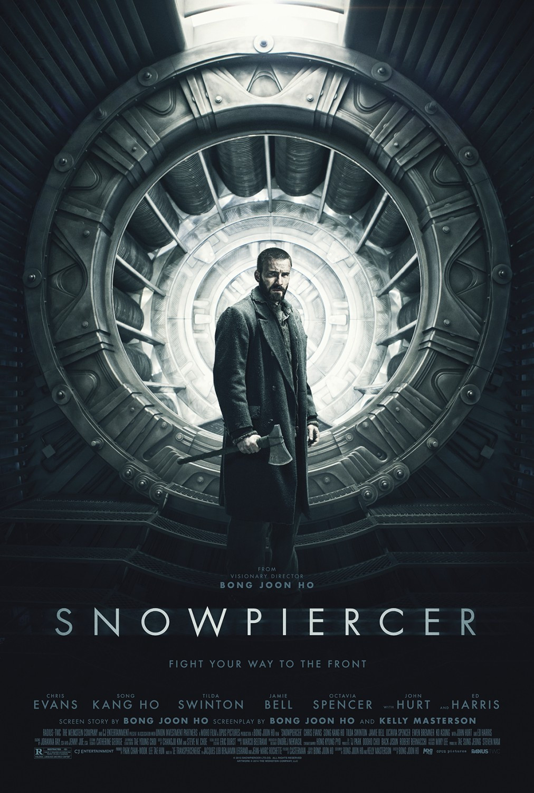
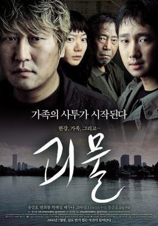
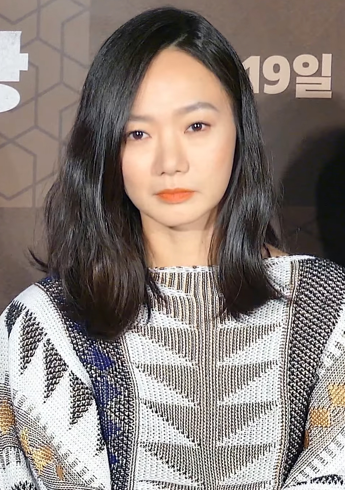
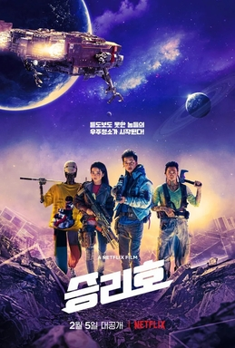
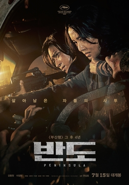
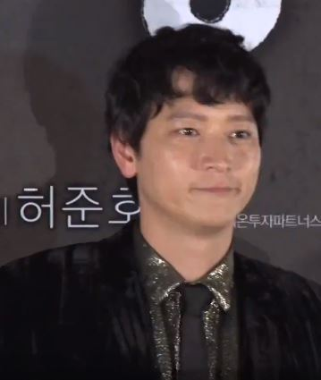